Experience & Projects
A chronological record of research roles, leadership positions,
and independent work, across policy, mathematics, and social enterprise.
TaxCity, across 27 countries
for TaxCity
competition, 19 states
for the Quizzing Club
Edunomix Institute · US 501(c)(3) · India Chapter
Founded and led the India Chapter of the Edunomix Institute, the first South Asia chapter of a US 501(c)(3) nonprofit. Ran a nationwide essay competition spanning 19 states and 54 schools, organised workshops, taught displaced Ukrainian students, and published financial literacy research.
Read more →DocsDocs · Apple-backed · Remote
Recently joined DocsDocs, an Apple-backed startup, as a remote Talent Recruitment Intern, helping source and evaluate talent as the team scales. If you would like to learn more, reach me at akshat.bhaskar@docs-docs.com.
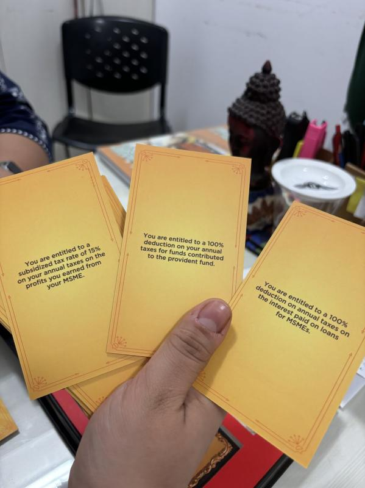
TaxCity · Finance & Grants · Government-recognised
Leading the finance and grants department at TaxCity, a Ministry of Education recognised financial literacy initiative built around a card game that teaches tax filing. Oversee financial planning, budgeting, grant strategy, and fundraising, and manage a team of finance interns. Secured $120,000+ in grant funding and contributed to ₹550,000+ in revenue. The programme has reached 79,000+ students in India and across 27 countries. Received Letters of Recommendation from Members of Parliament.
Read more →Edunomix India · Economics, finance & public policy
Research and long-form articles on economics, finance, and public policy for students and educators worldwide. Subjects have included the Union Budget 2024, the Open Network for Digital Commerce, the Bangladesh crisis, sustainable finance and ESG, and the economics of private aviation.
Read the articles →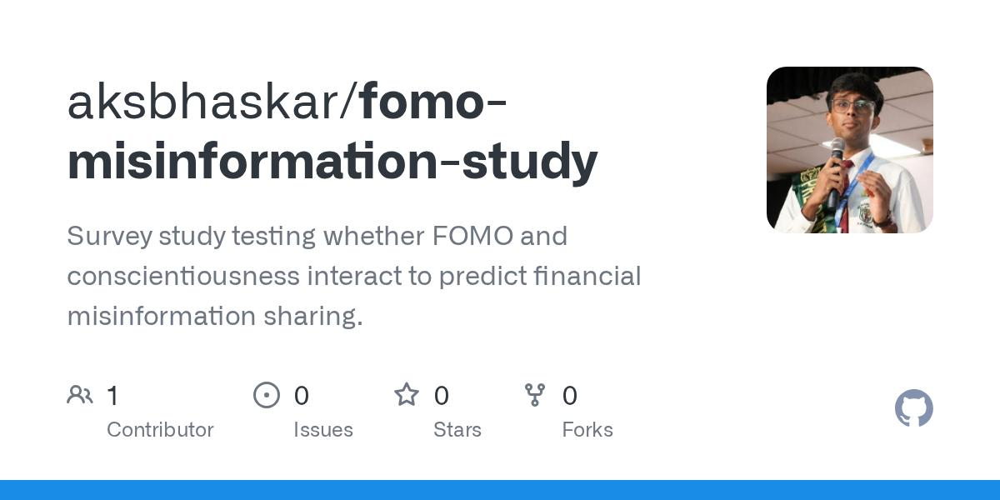
Indian School of Business · Under Prof. Hemant Kakkar
Studying how financial misinformation spreads across Indian social media under Professor Hemant Kakkar at the Indian School of Business. Applying MuRIL and XLM-RoBERTa to multilingual, code-mixed posts, and pairing the BFI-2-XS personality inventory with the Fear of Missing Out scale to identify which traits predict the sharing of misleading financial content.
Read more →
Ashoka University · Sonipat
A paid research and teaching position at the Lodha Genius–Ashoka University Programme. The programme made an explicit exception to include a pre-undergraduate applicant. Conducting original research in algberaic number theory under Professor Shanta Laishram (Head of the Theoretical Statistics and Mathematics Unit (Stat-Math Unit) at Indian Statistical Institute (ISI), New Delhi). Research stipend: ₹10,000.
Read more →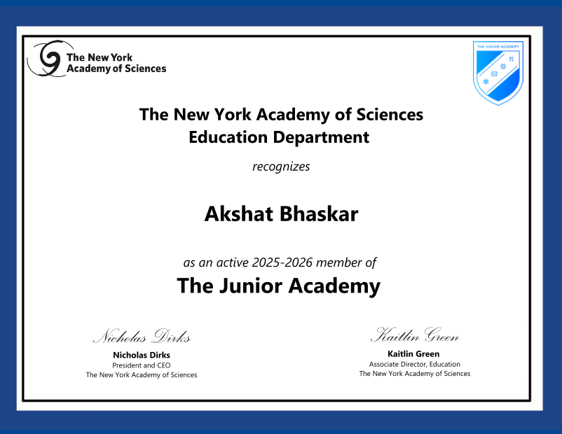
The Junior Academy · Fall 2025 Cohort · ≈10% acceptance
Selected for the Junior Academy, an international research programme drawing high school students from over 100 countries into interdisciplinary teams. Working on a project in energy infrastructure under Dr. Nandhini Sivakumar, Postdoctoral Research Scientist in Neurodegenerative Diseases at the Motor Neuron Center, Columbia University.
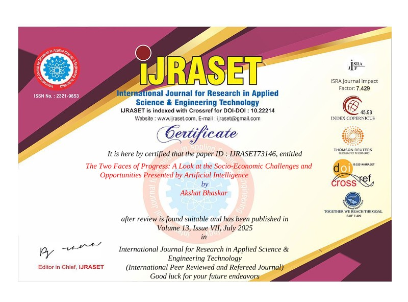
University of Pennsylvania · Under Prof. Surbhi Goel
Research on the policy impact of artificial intelligence under Professor Surbhi Goel, Magerman Term Assistant Professor of Computer and Information Science at the University of Pennsylvania. Produced The Two Faces of Progress, peer-reviewed and published in IJRASET (DOI), and presented it at the NYC STEM Research Conference as the only high school student selected to present.
Read more →Indian School of Business and Finance · Under Prof. Kritika Soni
Research on black-swan events and the propagation of extreme financial shocks across global markets under Professor Kritika Soni, building quantitative models of systemic contagion and cross-market spillover, culminating in a first-author paper on systemic risk and financial interconnectedness.
University of California, Santa Cruz
Selected for UC Santa Cruz's Shadow the Scientists programme, engaging with live university research alongside Dr. K. VijayRaghavan, former Principal Scientific Adviser to the Government of India, and Professor Raja GuhaThakurta, Distinguished Professor of Astronomy and Astrophysics at UCSC.
Schoolhouse.world · 30 countries
Reached 81 learners across 30 countries through 34 hosted sessions and more than 2,200 tutoring minutes on Schoolhouse.world, an international peer-learning platform, earning Bronze-level Tutor status and 109 positive learner ratings.
Hong Kong Baptist University
Selected for HKBU's summer programme, studying Environmental, Social and Governance (ESG) factors and culture in marketing under Professor Barry Hung, examining how sustainability and cultural context shape business strategy.
Government of India · New Delhi
Interned at the Office of Mr. Rahul Pachori, Director, Ministry of Education, contributing to internal policy analysis on the Samagra Shiksha Scheme, reviewing financial architecture and budget allocation under the National Education Policy 2020. Letter of Internship
Read more →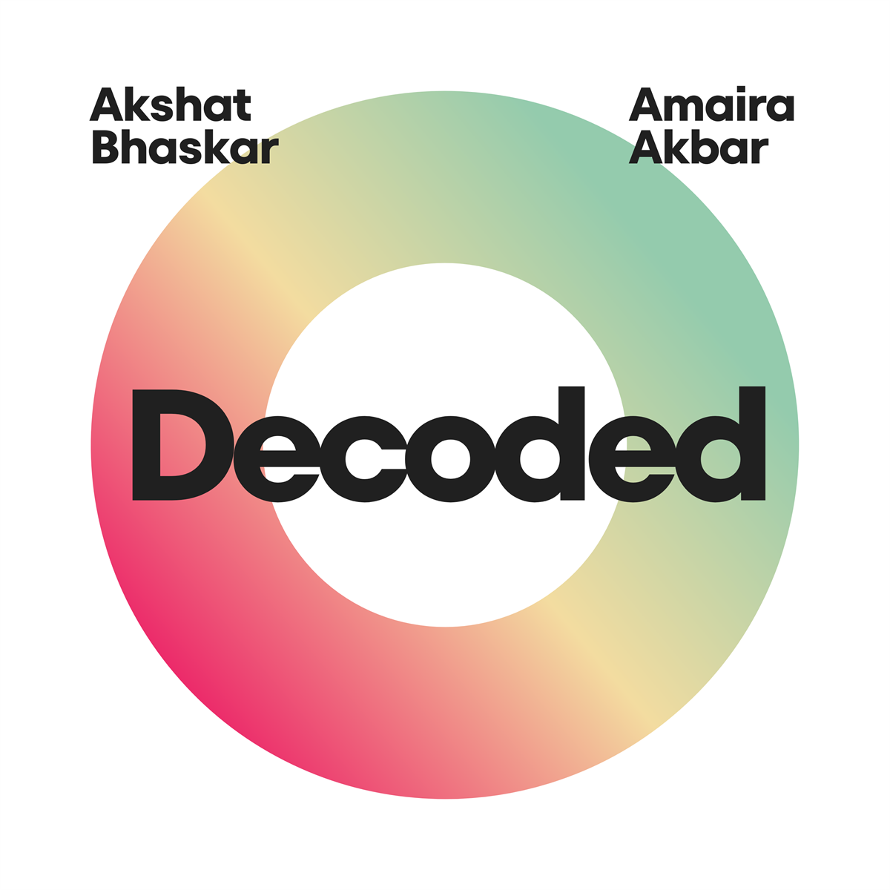
Spotify · Apple Podcasts · Amazon Music
Long-form conversations with researchers, entrepreneurs, investors, and policymakers on economics, AI, and public policy. I run every part of it: outreach, research, interviewing, editing, and distribution. Past 300 listening hours on Spotify, and named A 2025 Marathon Show, A 2025 Instant Hit Show, and A 2025 Most Shared Show in Spotify's Wrapped for Creators. Available on Spotify, Apple Podcasts, and Amazon Music, with its own home at decodedpodcast.vercel.app.
Read more →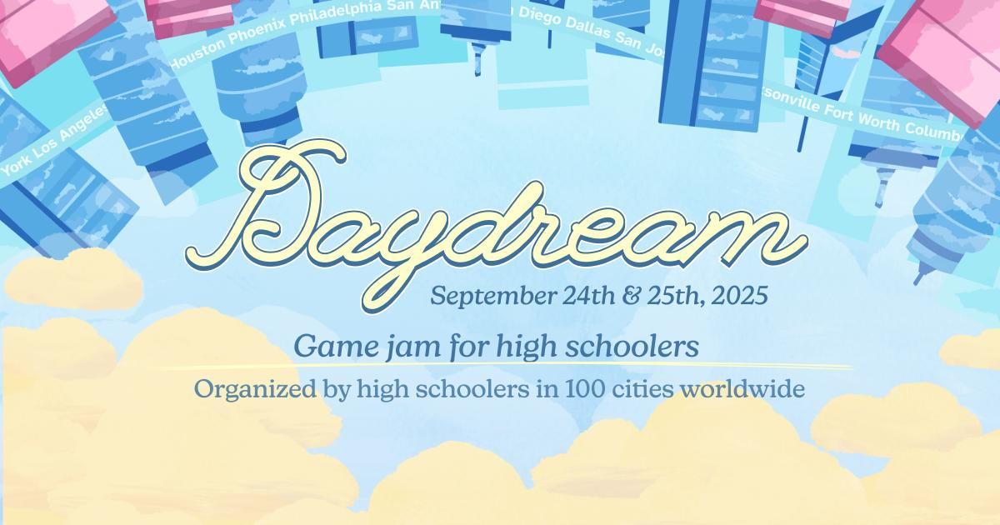
Hack Club · IIT Delhi · New Delhi
Organised Daydream Delhi, a two-day game jam for high schoolers held at IIT Delhi, part of Hack Club's global Daydream event running simultaneously across 100 cities worldwide. Featured workshops on Godot and Ren'py, lightning talks, and a 48-hour game-building sprint. All free of charge.
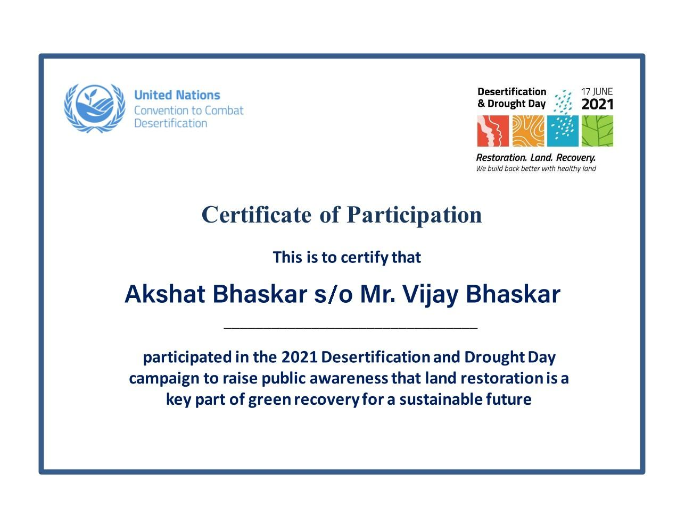
Prof. ShyamSunder Jyani · UN Land for Life Award
Volunteering for five years with Familial Forestry, the community reforestation movement founded by Professor ShyamSunder Jyani and recognised by the United Nations Land for Life Award. Began through the Drought and Desertification Day campaign and continued through green-action initiatives, and is now working to open a chapter at Delhi Public School, R.K. Puram through the Geography Club.
Rotary India Literacy Mission
Taught foundational reading, writing, and arithmetic to underserved adults through Rotary India's Adult Literacy Programme, adapting each lesson to learners with widely varied prior schooling to build everyday literacy and numeracy.
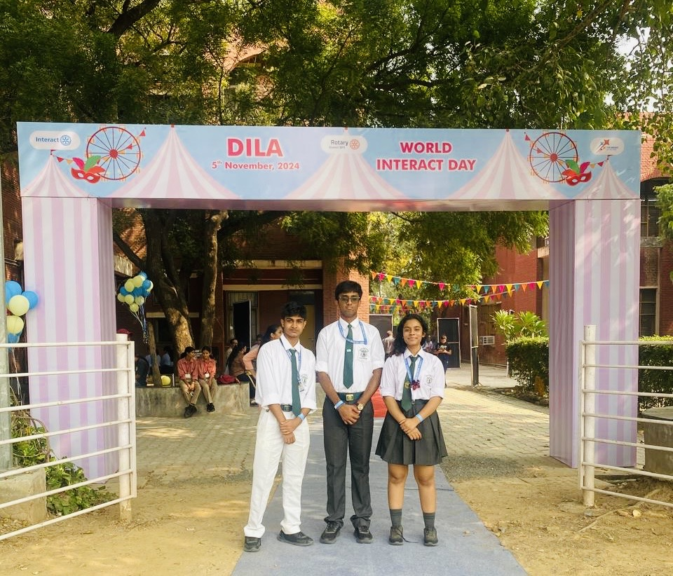
Delhi Public School, R.K. Puram · Rotary International
Represented the school through Interact, Rotary's youth service wing, attending the District Interact Leadership Assembly (DILA) 2024 and leading a fundraising campaign that raised close to four times its target for the club treasury.
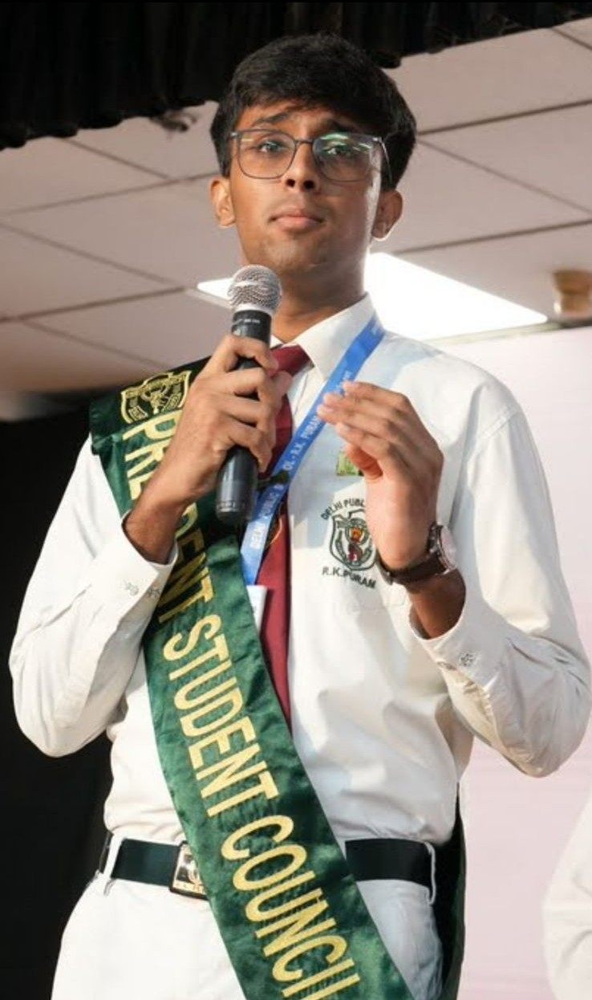
Delhi Public School, R.K. Puram · Class of 2026 · 9,500+ students
Elected President of the Student Council for the Class of 2026 after a seven-stage selection process of applications, interviews, and faculty recommendations. Sworn into office by Shri V. K. Shunglu, former Comptroller and Auditor General of India and Vice Chairman of the Delhi Public School Society. Lead the Council in representing the student body, coordinating between students, faculty, and school leadership, and overseeing student-led committees.
Read more →Delhi Public School, R.K. Puram · District Champions ×2
Appointed Captain of the U-19 football team, leading training, match preparation, and on-field strategy. Won the Delhi District Championship twice and represented the district at the Delhi State Championship.
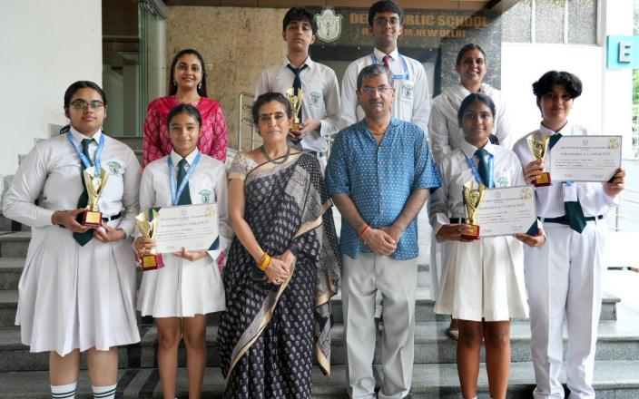
Delhi Public School, R.K. Puram · Finance & sponsorships
Managed the finances and sponsorship portfolio of one of India's leading school quizzing clubs, securing over $20,000 in sponsorships and prizes from PlayStation, Art of Problem Solving, Masters' Union, Taskade, and Crossword. Won first place at Quizonomics (ComAstitva 2024) and ComQuest (Arthashastra 2025), and contributed to the school's Overall Rolling Trophy at COMONOMICS 3.0. Offered the presidency for the following year but named Honorary President instead, since school policy bars the Student Council President from holding a second elected post.
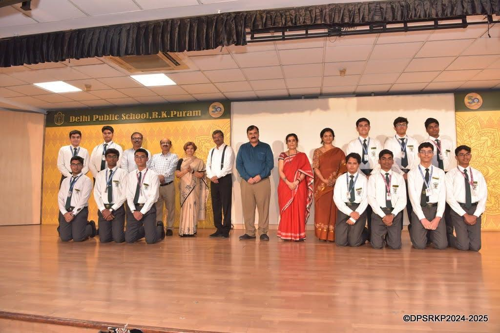
Delhi Public School, R.K. Puram
Appointed to the Student Council for Class 11 after applications and interviews. Sworn into office by Ms. Namita Pradhan, former Assistant Director General of the World Health Organisation, IAS officer of the 1977 batch, and Honorary Treasurer of the Delhi Public School Society. The role led to the presidency the following year.